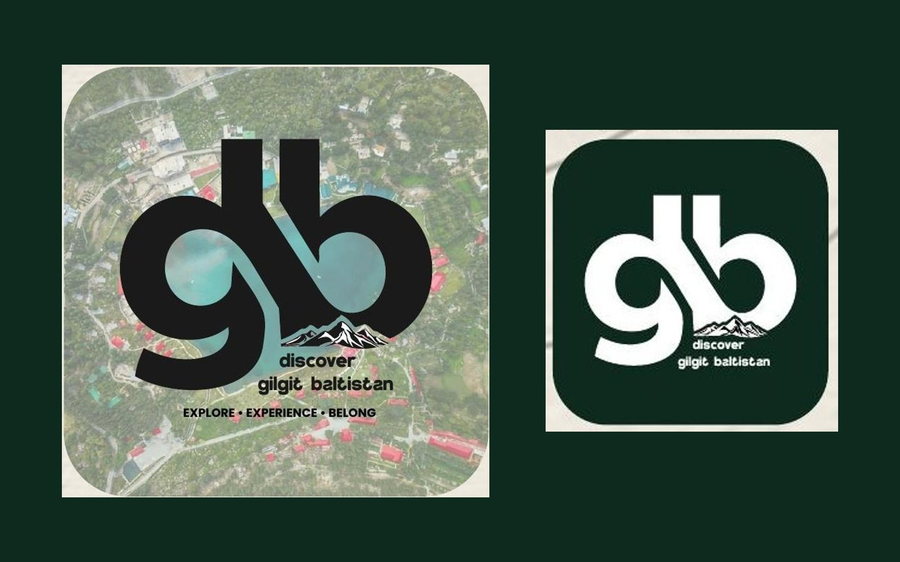

Discover Gilgit Baltistan
A tourism identity for the northern mountains: Explore. Experience. Belong.
- Discipline
- Brand identity, tourism
- Scope
- Logo design, Brand values, Colour and type, Merchandise, Pattern, Icons, Social media icon
- Type
- Client brand project

Overview
Discover Gilgit Baltistan captures the spirit of adventure, natural beauty and rich culture of Pakistan's northern mountains. The brand stands for exploration, belonging and a deep connection with nature.
Challenge
A destination brand has to work on a luggage tag, a water bottle and a tiny social icon, and appeal to adventurers and families alike.
Solution
A bold gb monogram with the mountain range set into the b, in forest green, olive, sand and off-white. The mark works in light, dark and green versions, as a repeat pattern and as an app icon, with a set of line illustrations for mountains, camping, exploring, photography and adventure.
Colour palette
- Forest#0E2A1F
- Olive#3D5A3A
- Sand#C7B48B
- Snow#F5F1E8
- Basalt#1A1A1A
Typography
- PoppinsBold, for the logo and headlines
Brand personality
- Adventure
- Authenticity
- Belonging
- Sustainability
Want something like this for your brand?
Start a project